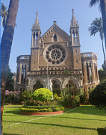
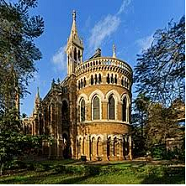

Science deals with the study of the processes and occurrences that we see in the natural world around us.
Scientific study is undertaken through observation and experiment.
It deals with the study of facts that are verifiable. When observed facts are studied systematically it becomes a science.

.The University of Mumbai (known earlier as University of Bombay) is one of the oldest and premier Universities in India.
It was established in 1857 consequent upon "Wood's Education Dispatch", and it is one amongst the first three Universities in India.
96.

The Kalina campus in suburban Mumbai covers an area of 93 hectares (230 acres) and houses graduate training and research centres. Departments offering courses in the sciences, technology, commerce, and humanities are located here.